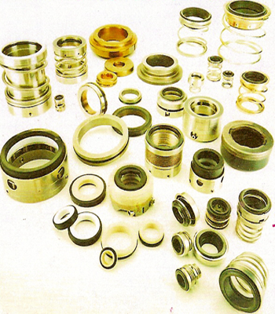

Mechanical Seals

A short description of the most-used types of Mechanical Seals including the ones for the main types of pumps such as: TAIKOKIKAI, SHINKOKINZOKU, TEIKOKU, HAMWORTHY, NANIWA, THUNE-EUREKA, ALL WEILER.
A short description of the most-used types of Mechanical Seals including the ones for the main types of pumps such as: TAIKOKIKAI, SHINKOKINZOKU, TEIKOKU, HAMWORTHY, NANIWA, THUNE-EUREKA, ALL WEILER.